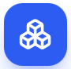

StockFlow
Lagerverwaltung
Ihr Lager. Klar organisiert.
Über die Anwendung
StockFlow bündelt Produkte, Bestände und Lagerbewegungen an einem Ort. Unternehmen können ihren Produktkatalog pflegen, Bestandsänderungen erfassen und Lageraktivitäten nachvollziehen. Eine zentrale Übersicht erleichtert den täglichen Umgang mit Waren und Beständen.